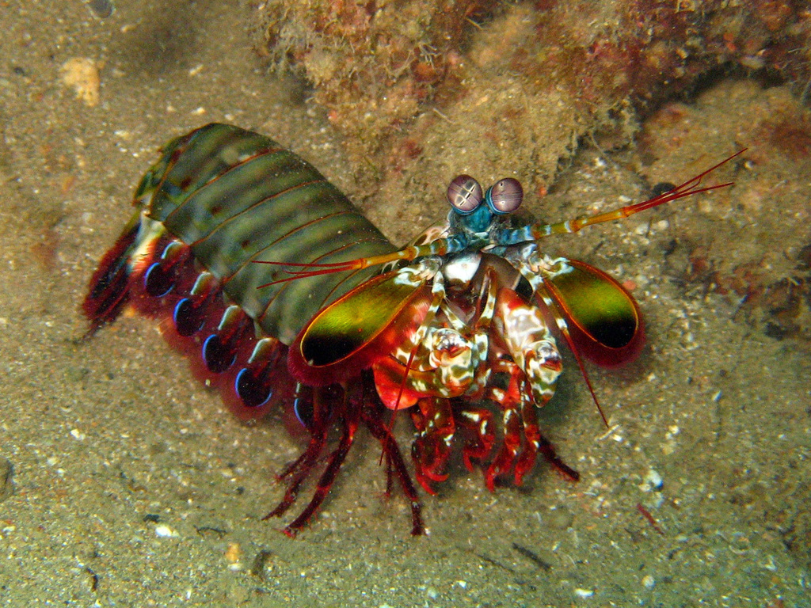

Fatos sobre o Stromatopoda

Stomatopoda (ou estomatópode), chamados popularmente de tamarutacas ou de lacraias-do-mar no
Brasil,
é
uma ordem de crustáceos marinhos da subclasse Hoplocarida, que agrupa cerca de 400 espécies,
caracterizadas principalmente pela morfologia da segunda pata torácica, que é modificada em
apêndice
subquelado, lembrando uma pata de louva-a-deus.
Informações Gerais:

Os estomatópodes são predadores ativos que caçam presas com o auxílio de um sentido de visão
muito apurado e capaz de interpretar polarização no espectro ultravioleta e infravermelho).
Apresentam uma grande variação de tamanho, que pode ir de poucos milímetros até
aproximadamente
40 cm nas espécies maiores. Eles vivem em fundo consolidado, lodoso ou ainda arenoso, onde
cavam
seus buracos ou aproveitam-se dos orifícios deixados por outros animais para neles se
instalar.
São animais exclusivamente carnívoros, alimentando-se de camarões, caranguejos, moluscos,
peixes
e até mesmo outros da mesma ordem. O segundo par de patas, muito desenvolvido, é usado tanto
para atacar a presa como para se defender. O urópodo, quando aberto, também funciona para
defesa, como um escudo, fechando a galeria em que o animal esteja instalado. A fêmea desova
no
local onde se abriga e, em caso de perigo, enrola os ovos como uma bola, prendendo-os junto
ao
corpo até encontrar um abrigo mais protegido.
Também conhecidas como esquilas ou lagosta-boxeadora, espalhadas pelas costas dos mares
tropicais e subtropicais. Além das patas, elas apresentam uma silhueta característica,
devido ao
grande comprimento aparentemente de seu abdómen. Os ovos ficam ligados por uma massa
gelatinosa
que a mãe carrega contra o ventre até que eclodem, limpando-os sem parar.
O poderoso soco deste verdadeiro lutador:

A força de um soco do camarão mantis é de 1500 newtons ou cerca de 152 quilos, enquanto o
soco
médio de um ser humano está na casa dos 3300 newtons ou 336 quilos. Ou seja, eles são muito
menores que a gente, mas dão socos com a metade da nossa força.
Segundo a bióloga da Universidade San Jose Maya deVries, a força do soco desse animal é
explicável pela fisiologia do animal. “O camarão mantis possui um sistema de acúmulo de
energia para engatilhar sua pata. Ele possui um sistema de tranca que reserva a energia.
Portanto, quando o animal está pronto para atacar, ele contrai seus músculos e libera a
tranca. Toda a energia acumulada nos músculos e no exoesqueleto do camarão é liberada e
a
pata gira à frente com uma aceleração absurda, que chega à 80 quilômetros por
hora”,
explica ao Oddity Central.